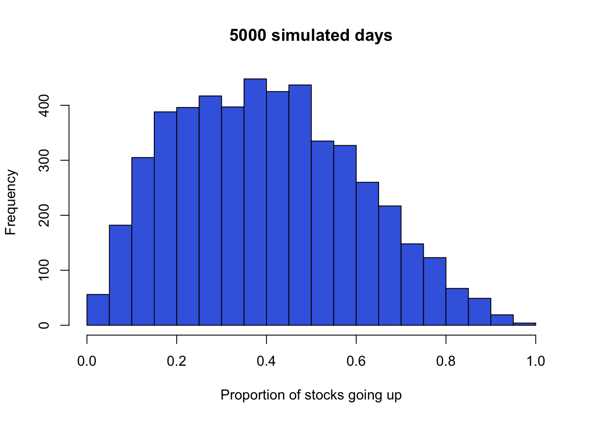
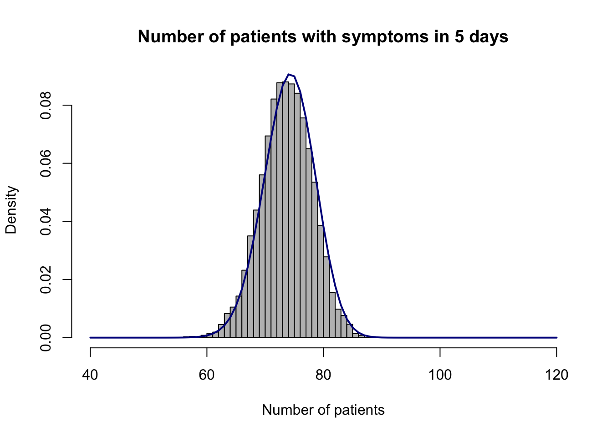

Suppose flights depart from Newark Airport at a constant rate of 10 flights per hour. What is the probability that you have to wait for more than 8 minutes for the next departing flight? Less than 10 minutes? Between 10 and 20 minutes?
Show solution
The waiting time follows an exponential distribution with rate \(\lambda=1/6\) per minute, corresponding to an average wait of 6 minutes.
1-pexp(8, rate =1/6) # More than 8 minutes
[1] 0.2635971
pexp(10, rate =1/6) # Less than 10 minutes
[1] 0.8111244
pexp(20, rate =1/6) -pexp(10, rate =1/6) # Between 10 and 20 minutes
[1] 0.1532016
Question 2
Suppose the proportion of all stocks that go up in a given day (the closing price is higher than the opening price) follows a beta distribution with shape1 = 2 and shape2 = 3.
What is the chance of a really bad day, when less than 5% of stocks go up?
What is the chance of a really good day, when more than 75% of stocks go up?
What is the chance that 30% to 40% of stocks go up?
Simulate 5000 values from this beta distribution. Plot a histogram and describe its shape and range. Use the simulated mean to estimate the distribution’s true mean, \(2/(2+3)=0.4\). What does each simulated value represent in context?
Each simulated value represents the proportion of stocks that go up on one simulated day. The distribution is right-skewed and has a range from 0 to 1.
hist(mysim, nclass =20, main ="5000 simulated days",xlab ="Proportion of stocks going up", col ="royalblue")

Question 3
Suppose the weight of adult female cats in a certain population approximately follows a normal distribution with mean 8 lbs and standard deviation 2.2 lbs. What proportion of female cats weighs less than 10 lbs? More than 6 lbs? Between 7 and 9 lbs?
Show solution
pnorm(10, mean =8, sd =2.2) # Less than 10 lbs
[1] 0.8183489
1-pnorm(6, mean =8, sd =2.2) # More than 6 lbs
[1] 0.8183489
pnorm(9, mean =8, sd =2.2) -pnorm(7, mean =8, sd =2.2) # Between 7 and 9 lbs
[1] 0.3505637
Question 4
In Introduction to Probability, do Question 26 on page 222.
Bridies’ Bearing Works manufactures bearing shafts whose diameters are normally distributed with parameters \(\mu = 1\), \(\sigma = .002\). The buyer’s specifications require these diameters to be 1.000 ± .003 cm. What fraction of the manu- facturer’s shafts are likely to be rejected? If the manufacturer improves her quality control, she can reduce the value of \(\sigma\). What value of \(\sigma\) will ensure that no more than 1 percent of her shafts are likely to be rejected?
For \(\sigma=0.002\), calculate the rejection rate and compare it across candidate standard deviations. A value slightly below 0.0012 keeps the rejection rate under 1%.
pnorm(1-0.003, mean =1, sd =0.002) +1-pnorm(1+0.003, mean =1, sd =0.002)
[1] 0.1336144
mysd <-seq(from =0.0001, to =0.002, by =0.0001)cbind( mysd,round(pnorm(1-0.003, mean =1, sd = mysd) +1-pnorm(1+0.003, mean =1, sd = mysd), 3))
In Introduction to Probability, do Question 28 on page 222.
(Ross) An expert witness in a paternity suit testifies that the length (in days) of a pregnancy, from conception to delivery, is approximately normally distributed, with parameters \(\mu = 270\), \(\sigma = 10\). The defendant in the suit is able to prove that he was out of the country during the period from 290 to 240 days before the birth of the child. What is the probability that the defendant was in the country when the child was conceived?
Question 6
In a clinical trial of 20 patients, the probability that an individual patient responds to a certain drug is \(p=0.25\). Use a binomial model to study the possible outcomes.
Simulate 1000 random draws from a binomial distribution with \(n=20\) and \(p=0.25\). What do the simulated numbers represent?
The response rate \(p\) is usually unknown and of interest to researchers. In a beta-binomial model, first draw \(\tilde{p}\) from a beta distribution with shape1 = 2 and shape2 = 6, then draw \(X\) from a binomial distribution with \(n=20\) and \(p=\tilde{p}\). Repeat many times and estimate the chance that fewer than 5 patients respond.
Show solution
Each simulated number represents the number of patients, out of 20, who respond in one simulated clinical trial.
The beta distribution assigned to \(p\) has mean \(2/8=0.25\). Both models have the same expected number of responding patients (5), but the beta-binomial model has more variation.
nsim <-10000result <-rep(NA, nsim)for (i in1:nsim) { ptilde <-rbeta(1, shape1 =2, shape2 =6) result[i] <-rbinom(1, size =20, prob = ptilde)}mean(result <5) # Estimated probability fewer than 5 respond
[1] 0.5159
mean(result) # Estimated average number who respond
Suppose the incubation period \(T\) of a certain disease follows an exponential distribution with a mean of 3.7 days.
What is the chance that a person develops symptoms within 5 days of contracting the disease, \(P(T \le 5)\)?
Simulate 100 patients who have contracted the disease. Record each patient as 1 if they develop symptoms within 5 days and 0 otherwise. How many of the 100 patients develop symptoms within 5 days?
Estimate the probability that, among 100 people who have contracted the disease, 80 or more develop symptoms within 5 days.
Suppose the number of people contracting the disease today follows a Poisson distribution with mean 100. Modify your simulation to estimate the probability that 80 or more people develop symptoms within the next 5 days. Plot a histogram of the number who develop symptoms.
Show solution
The probability in part 1 is:
a <-pexp(5, rate =1/3.7)a
[1] 0.7411098
About 74% of people are expected to develop symptoms within 5 days. The number who develop symptoms among 100 people follows a binomial distribution with \(n=100\) and \(p=a\).
mysample <-sample(c(0, 1), size =100, replace =TRUE,prob =c(1- a, a))mysample
1-pbinom(79, size =100, prob = a) # Exact probability
[1] 0.1072067
hist(result, probability =TRUE,main ="Number of patients with symptoms in 5 days",xlab ="Number of patients", xlim =c(40, 120),col ="grey", nclass =30)points(40:120, dbinom(40:120, size =100, prob = a),type ="l", col ="darkblue", lwd =2)

For part 4, the simulation adds uncertainty in the number of people contracting the disease, so its histogram has a wider range than the simulation in part 3.
hist(result, probability =TRUE,main ="Number of patients with symptoms in 5 days",xlab ="Number of patients", xlim =c(40, 120),col ="grey", nclass =30)